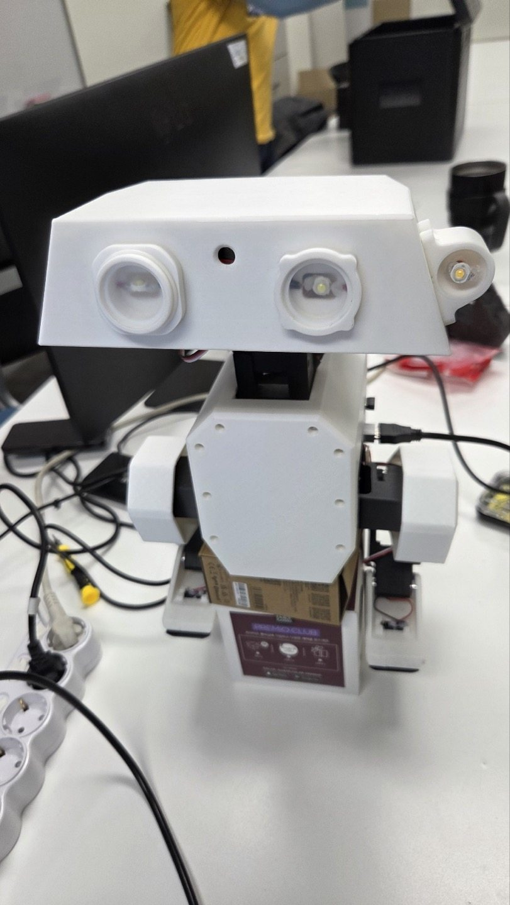
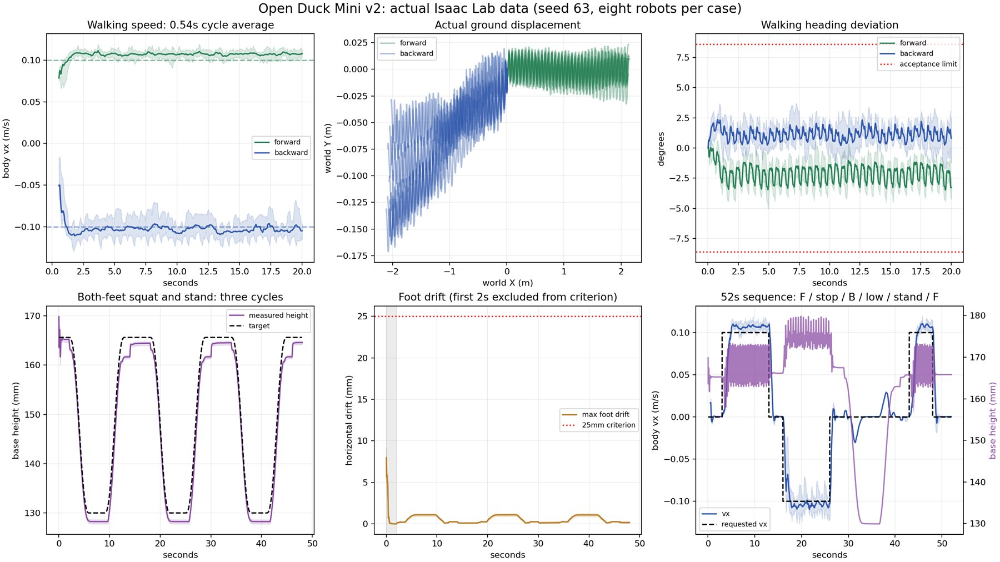
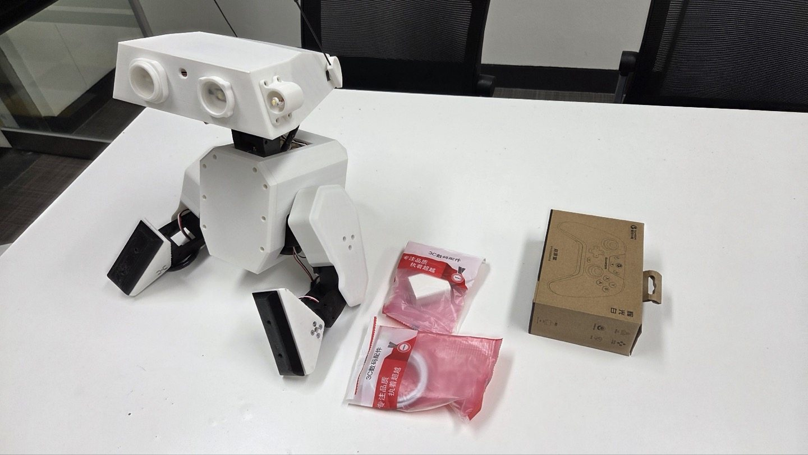
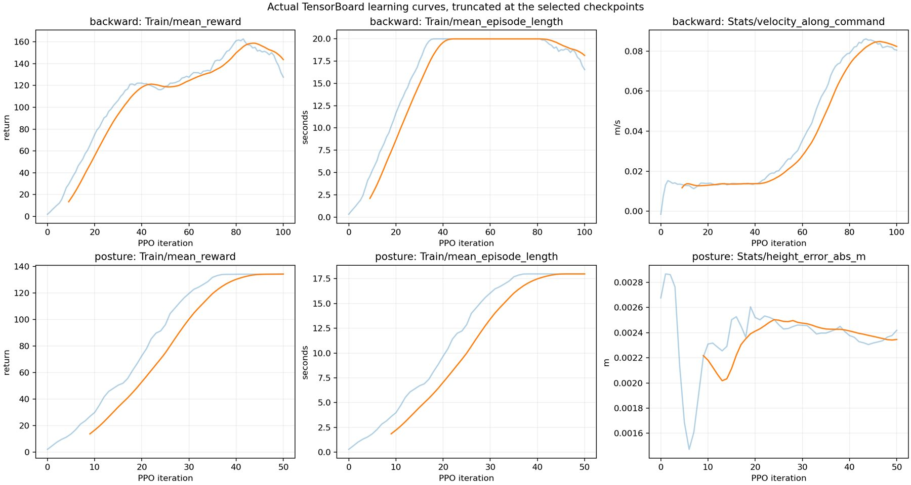
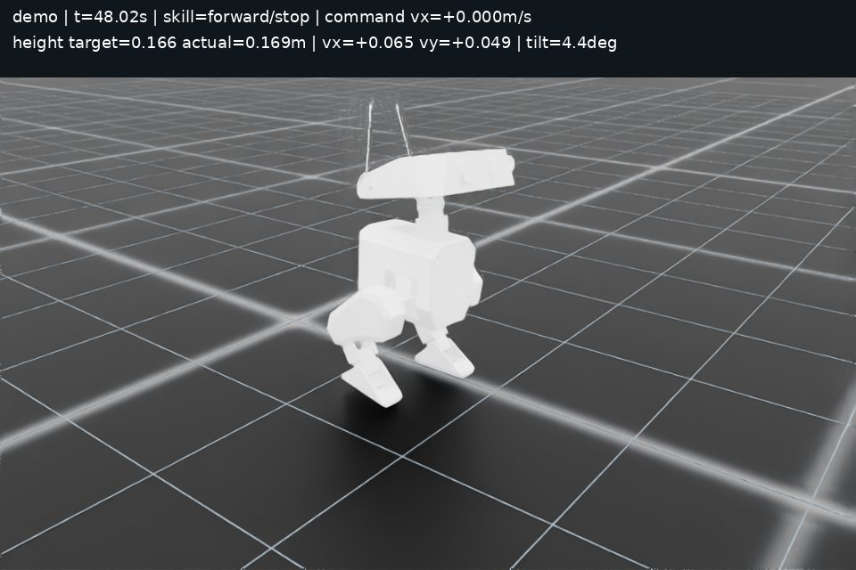

Overview
A 3D-printed biped of about 2.1 kg that runs an ONNX walking policy on a Raspberry Pi at 50 Hz. The repo also holds three Isaac Lab policies: forward and stop, backward, crouch and stand.
- Ran on
- Raspberry Pi with 14 STS3215 servos, IMU, foot contacts, camera, Xbox controller
- Method
- PPO in Isaac Lab 2.2 with RSL-RL, fine-tuned from the upstream
BEST_WALK_ONNX_2policy - Training PC
- RTX 5070, Isaac Sim 5.0.0.0, Isaac Lab 2.2.0
- Based on
- apirrone/Open_Duck_Mini, robot design and initial walking policy, Apache 2.0; not an official Open Duck release
Problem define
The first Isaac Lab policy kept its feet moving but drifted sideways, turned, and could not stop. A new .pt also cannot be dropped into the Pi runtime.
- 0/8 forward trials passed by the first policy
- 455.86° mean cumulative heading change in 20 s, first policy
Solution
A Pi runtime that walks the real robot with an ONNX walking policy, and three new policies that pass on flat ground in Isaac Lab with nominal physics. The new policies ran in simulation only.
| Value with unit | What it measures (10 words or fewer) |
|---|---|
| 80/80 trials | Stop, forward, backward, posture, transition trials in simulation |
| 48/48 trials | Stop 3 s, walk 12 s, stop 5 s in simulation |
| 2.133 m forward, 7.5 mm sideways | Mean 20 s straight walk, seed 44, simulation |


Process
- Check. Matched the simulator to the robot: joint order, zero offsets, 50 Hz loop, sensor-only actor inputs, delay and backlash.
- Fail. The first PPO policy, about 11.5 million samples, drifted sideways, turned and passed 0 of 8 forward trials.
- Fine-tune. Replaced it: imported upstream
BEST_WALK_ONNX_2as the actor, fine-tuned with PPO, added IMU heading hold and 0.85 command scale. - Extend. Kept the forward policy, trained a separate backward PPO and a crouch and stand policy on an IK reference.


Lesson
Passing in simulation is not walking on the robot; the two runtimes differ.
The Pi runtime and the Isaac Lab package use different observations, so the new policies have not run on the robot. Measured servo parameters, delay and backlash are still reference values. Under randomized physics, forward passed 5/8.
